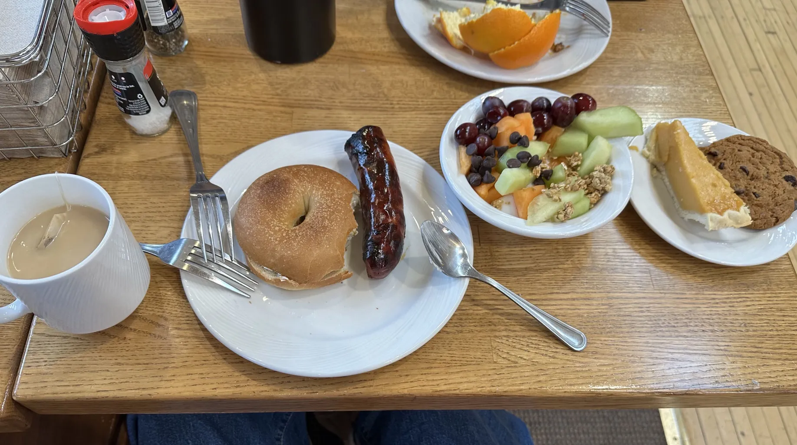

ormm okay. so this is probably going to be the least accessible site ever bc the plan is to just document life in whatever language i feel like in the moment. sorry to people who don't know any of these languages.
most things will probs be in english tho bc i know english the best! but im doing multiple languages bc i want to practice my chinese as someone who's supposed to be a native chinese speaker, and also french bc i need it for class. have fun lookin around!!
also, for translation for french, thank you to wordreference!!! goated
gonna keep entries here for nowww (mm/dd/yyyy):
bonjour!! c'est le premiere paragraph en(?) mon blog. je vais parler de mon jour. désolé si mon français est très mal; je n'ai pas parlé le(?) français depuis que le(?) lycée.
ahhhhh, ma grammaire est horrible. désolée beaucoup(?)
aujourd'hui, je m'ai(?) lêver à dix ou onze heures, et j'ai mangé le (petit-)déjeuner avec mon copain. il y au biscuit vegan, qu'est(??) très bon, même a beaucoup de la sucre.

puis, mon cheri a couri(?) parce que il a un course en dimanche.
c'est très difficile.... je vais fais une promenade et retourne après le dîner!!
d'accord, j'ai mangé le dîner et j'ai aussi(?) parlé avec mon copain sur les petits communautés, parce qu'il pense que les étudiantes à mon université ne réfléchissent pas sur les communautés (le communauté de notre ville, par exemple) et alors ne sentissent pas les relations authentiques avec les autres. et j'ai commencé penser que je n'ai pas engagé avec mes communautés dans le temps. alors, nous avons créé un résolution pour le prochain trimestre pour faisons le bénévolat! et je vais aller au les réunions du club de maths et du club de bandes dessinées!!! semble très super, non? j'espère que nous n'allons pas se défiler, mdr...
enfin, c'est dix heures, alors nous dévrions dormir bientôt. ce paragraph n'est pas mal, à mon avis! même je demande beaucoup d'aide, mdr. si tu as lu tout le paragraph, merci!! à plus tard!!
你好！这是我在这儿第二个博文。
因为春假快要结束了，我这几天没有做那么多好玩儿的事情，大部分只待在屋里忙着做我的这个博客，哈哈。 其实，我觉得做这个东西也挺好玩儿因为是一个创意型的活动，所以我不会抱怨。
除了做我的网站，我今天早上也做了些琐事；我洗了昨天吃麻婆豆腐的碗和勺子，然后也叠了我洗完的衣服。 因为两天后，学校会开始，我也必须要把我的课表弄清楚。我听说有一个数学老师很好，所以我想要加入他的课，但是我一月前的时候没小心在我的 邮件里写了我想进 ”section 51 and 41，“ 但是对的 section 其实是 54 和 44. 跟那个教室成员搞清楚完，我才发现我的物理 lab section 和 54 是在一个时间，然后 41 已经满了。看起来有好多人听说这个老师是最好的。我自己上了我大学的 course feedback 网站，就发现这个老师有最高的评分。哎呀，真烦啊！dan shi ye mei na me da但是也没那么大的问题， 最少我还申请上了我想申请的课。
昨天我的男朋友跑步了，因为他明天有个比赛，但是他今天膝盖说有点儿毛病，好像上火了。所以，我去了餐厅拿了点儿冰，也顺路到我们学校的小商店买了一些方便面（所以到会儿能跟麻婆豆腐一起吃）。
好像没有别的东西该说了。用中文写这个小文章真的不简单啊，我好久都没用中文说超十个字的句子，现在要写出我整个天的活动！但是没事，希望我会天天进步！